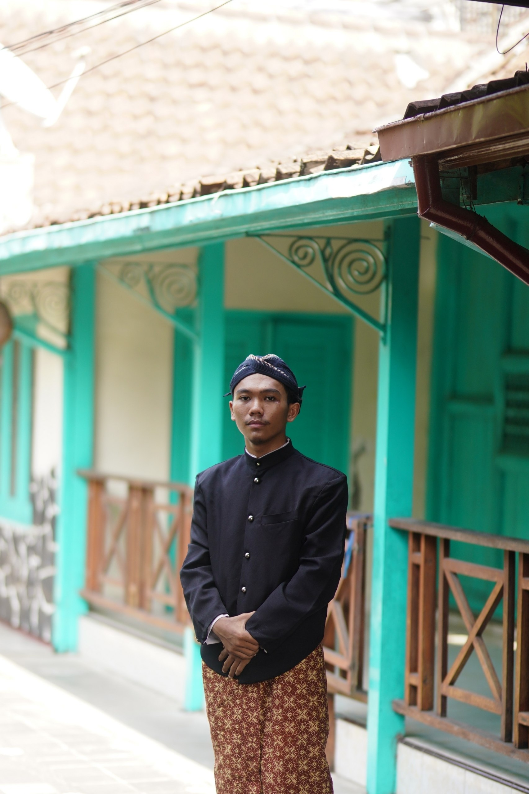
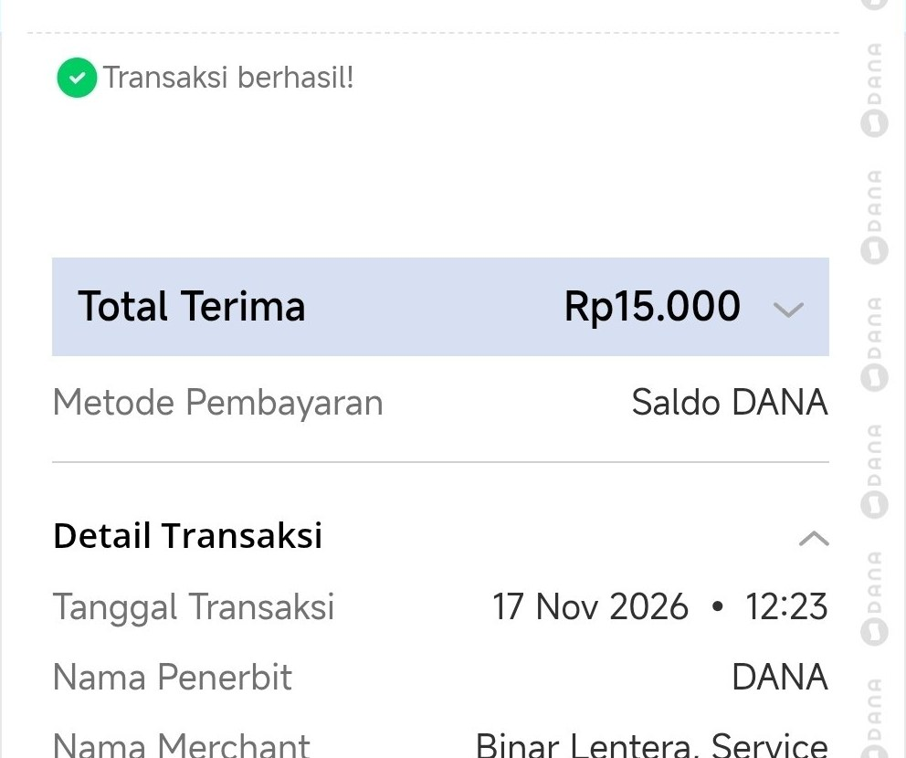
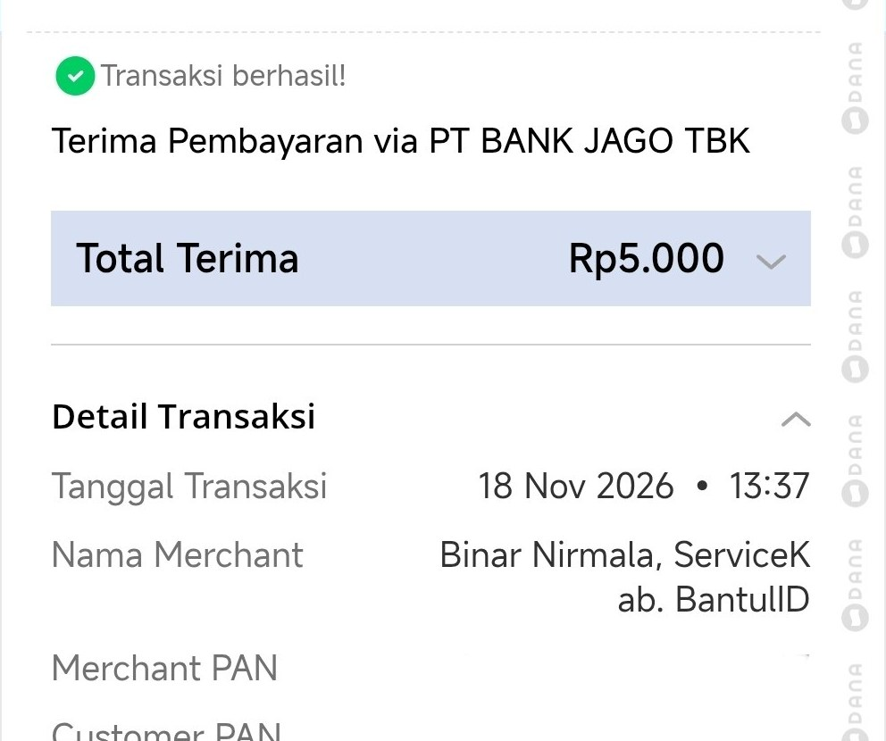
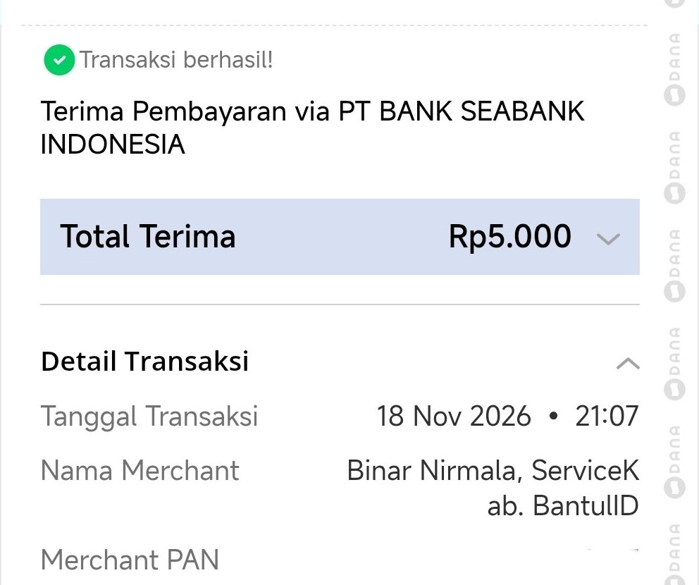
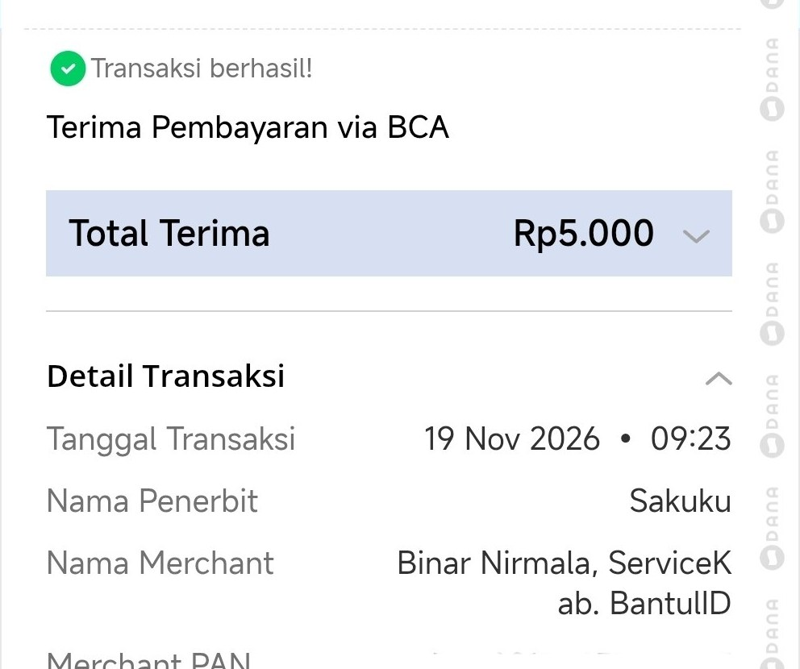
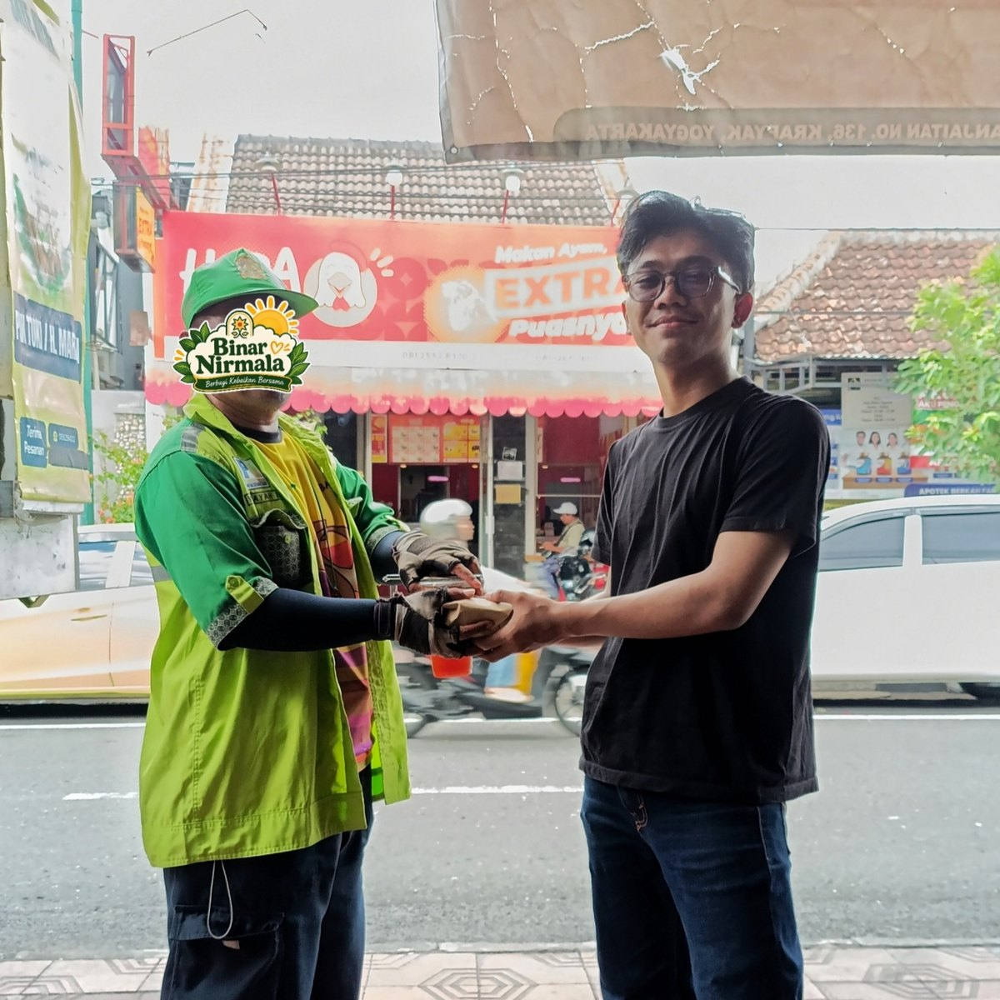
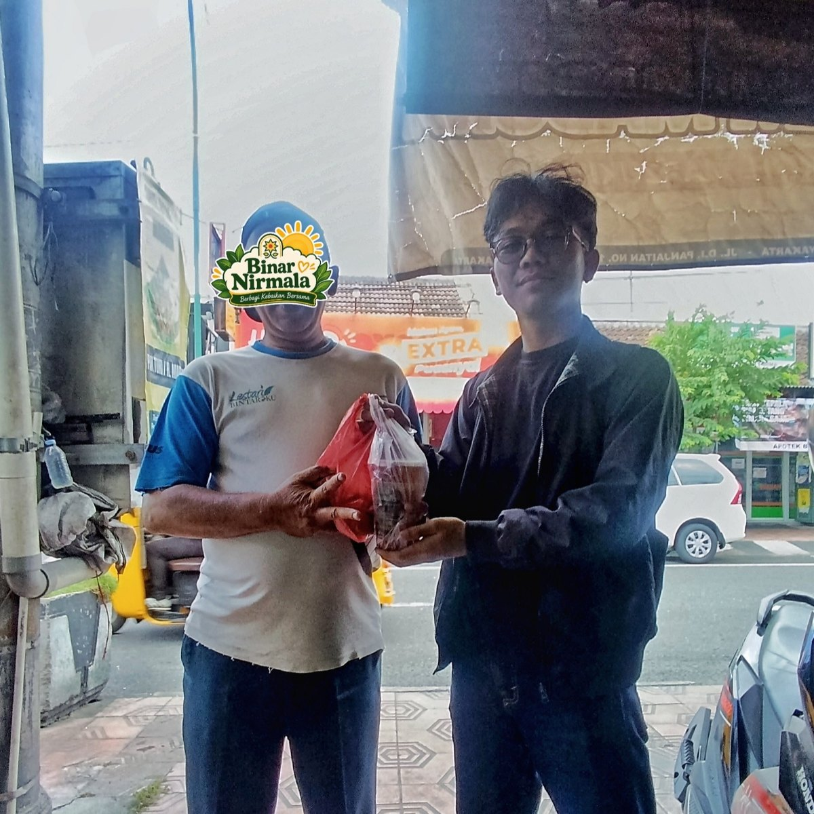
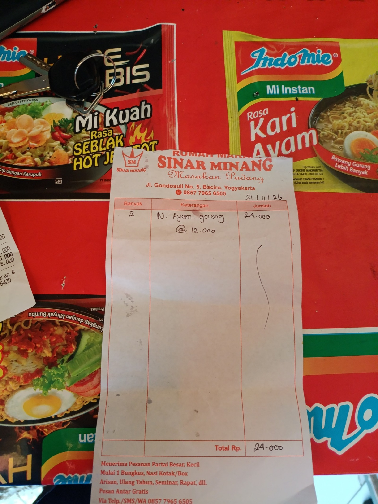
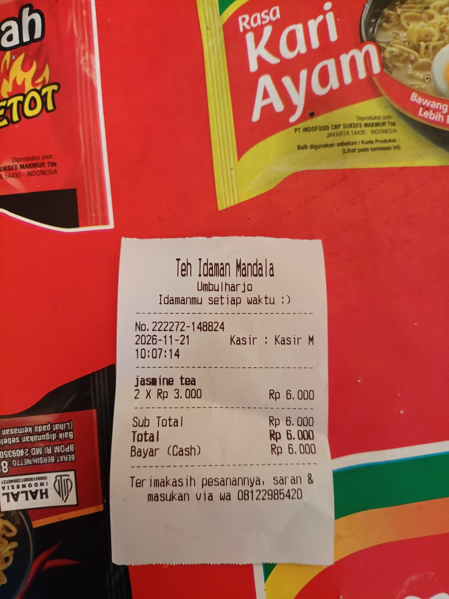

VISI
Berbagi dengan tulus, bertumbuh dengan bermartabat.
Menumbuhkan kepedulian melalui infak sarapan yang sederhana, amanah, dan dekat dengan kehidupan pekerja harian serta warga yang membutuhkan.
BINAR NIRMALA mengajak kita berbagi sarapan kepada orang-orang yang membutuhkan, termasuk buruh, pengemudi ojek online, kurir, tukang parkir, dan pekerja harian. Satu porsi menjadi sapaan hangat untuk memulai hari.
Berangkat dari nilai gotong royong, kepedulian, dan amanah. Unsur Jawa dan Islam hadir sebagai identitas visual yang saling menguatkan.
Menumbuhkan kepedulian melalui infak sarapan yang sederhana, amanah, dan dekat dengan kehidupan pekerja harian serta warga yang membutuhkan.

Mahasiswa Program Studi Ekonomi Syariah, Fakultas Ekonomi dan Bisnis Islam, UIN Sunan Kalijaga.
Binar Nirmala adalah lembaga infak yang mengajak kita berbagi sarapan untuk saudara-saudara yang bekerja keras sejak pagi: pengemudi ojek online, kurir, pedagang kecil, tukang parkir, petugas kebersihan, dan siapa pun yang berangkat mencari nafkah dengan perut kosong. Bagi mereka, sepiring sarapan bisa menentukan apakah hari itu dimulai dengan tenaga atau dengan menahan lapar.
Nama Binar Nirmala berasal dari dua kata. Binar berarti bersinar dan nirmala berarti suci serta jernih. Artinya, kami ingin menghadirkan cahaya kebaikan di awal hari lewat infak yang bersih, jujur, dan dilaporkan terbuka. Nuansa Jawa dan Islam yang kami bawa, mengingatkan bahwa berbagi adalah tradisi lama yang terus kita rawat.
Rangkaian kerja untuk infak sarapan di Yogyakarta. Program menargetkan 10 porsi. Penerimaan infak dicatat berdasarkan dana yang masuk.
Mengajak lingkungan kampus dan jejaring sekitar mendukung sarapan bagi pekerja yang berangkat sejak pagi. Pengumpulan infak ditutup pada 19 November 2026 dengan penerimaan aktual Rp30.000.
Setiap infak dicatat berdasarkan tanggal, jumlah, dan bukti transaksi. Nama pemberi dapat disamarkan untuk menjaga privasi; bukti transaksi yang belum diterima diberi keterangan menunggu bukti.
Program ini berfokus pada infak untuk sarapan. Zakat dan wakaf tidak dihimpun dalam kampanye ini; sumbangan barang dan tenaga relawan dicatat terpisah dari kas.
Anggaran rencana Rp15.000 per paket. Dari target 10 paket, realisasi dengan dana Rp30.000 adalah 2 porsi nasi ayam dan 2 gelas es teh yang telah dibagikan.
Sasaran meliputi buruh, pengemudi ojek online, kurir, pedagang kecil, tukang parkir, petugas kebersihan, dan pekerja harian lain yang membutuhkan sarapan. Penerima tidak diminta membagikan data pribadi.
Penyaluran selesai pada 21 November 2026 di Jalan Ngasem. Dana Rp30.000 digunakan untuk 2 porsi nasi ayam (Rp24.000) dan 2 gelas es teh (Rp6.000), lalu dibagikan kepada penerima.
Memilih sarapan yang layak, bersih, dan mudah dibagikan; menyapa penerima tanpa membedakan latar. Foto dokumentasi hanya dibuat dengan persetujuan dan tidak mengekspos penerima.
Laporan memisahkan dana diterima, dana tersalur, biaya, dan saldo. Laporan akhir memuat penerimaan, belanja, porsi tersalur, biaya, dan saldo.
Catatan transaksi akan dicocokkan dengan bukti transfer, kuitansi belanja, dan jumlah porsi. Penerimaan dan pengeluaran dicatat sesuai kegiatan yang benar-benar terjadi.
Evaluasi mencatat target rencana 10 paket dan realisasi 2 porsi nasi ayam beserta 2 gelas es teh. Seluruh Rp30.000 tersalurkan untuk belanja tersebut dan saldo akhir Rp0.
Pengumpulan infak nyata ditutup pada 19 November 2026. Pada 21 November 2026, seluruh dana Rp30.000 telah digunakan untuk pembagian sarapan di Jalan Ngasem.
Empat transaksi masuk selama 17–19 November: Rp15.000 dan tiga transaksi masing-masing Rp5.000. Bukti transfer telah disertakan; rincian identitas transaksi tidak dipublikasikan.
Rp24.000 untuk 2 porsi nasi ayam dan Rp6.000 untuk 2 gelas es teh. Kegiatan berlangsung di Jalan Ngasem pada 21 November 2026.
Masukkan nominal untuk melihat perbandingan dengan anggaran Rp15.000 per porsi. Ini hanya kalkulator informasi dan tidak memproses pembayaran; pengumpulan telah ditutup.
“Perumpamaan orang-orang yang menginfakkan hartanya di jalan Allah adalah seperti sebutir biji yang menumbuhkan tujuh tangkai; pada setiap tangkai ada seratus biji. Allah melipatgandakan bagi siapa yang Dia kehendaki. Allah Mahaluas lagi Maha Mengetahui.”
QS. Al-Baqarah: 261 · NU Online ↗“Allah Tabāraka wa Ta‘ālā berfirman: ‘Wahai anak Adam, berinfaklah, niscaya Aku memberi rezeki kepadamu.’”
Sahih Muslim 993a · Book 12, Hadith 45 ↗Pembaruan 21 November 2026 berdasarkan empat bukti transfer, nota belanja, dan dokumentasi penyaluran. Seluruh dana telah digunakan; saldo akhir Rp0.
Target rencana Rp150.000 untuk 10 paket; realisasi 2 paket senilai Rp30.000. Pengumpulan telah ditutup dan tidak ada donasi baru yang diminta.
Rp30.000 dana masuk = Rp24.000 nasi ayam + Rp6.000 es teh + Rp0 saldo.
Galeri ini menampilkan bukti penerimaan, dokumentasi pembagian sarapan di Jalan Ngasem, dan nota belanja pada 21 November 2026.
Transaksi berhasil. Nama pengirim dan rincian identitas disamarkan.

Transaksi berhasil melalui Bank Jago.

Transaksi berhasil melalui SeaBank.

Transaksi berhasil melalui BCA.

Dua porsi nasi ayam dan dua gelas es teh dibagikan. Wajah penerima ditutup untuk menjaga privasi.


Nasi ayam 2 porsi Rp24.000 dan es teh 2 gelas Rp6.000. Total belanja Rp30.000; saldo akhir Rp0.


Pengelola: Alwi Nurhidayat · NIM 24108010061. Untuk pertanyaan program dan pembaruan laporan, hubungi melalui kanal berikut.